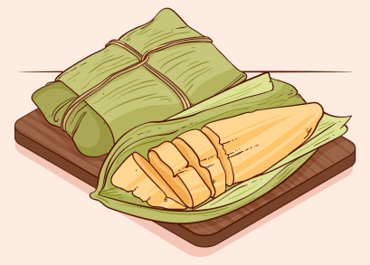

Pamonha
Prato típico com milho verde ralado
Porções
01
Ingredients
espiga de milho verde
colher de sopa de açúcar
colher de sopa de manteiga
Sal a gosto
Palha de milho (para embrulhar)
Modo de preparo
Descasque a espiga de milho e corte os grãos.
Bata o milho, açúcar, manteiga e sal no liquidificador.
Coloque a massa nas palhas de milho e feche bem.
Cozinhe em água fervente por cerca de 40 minutos.
Deixe esfriar e sirva.